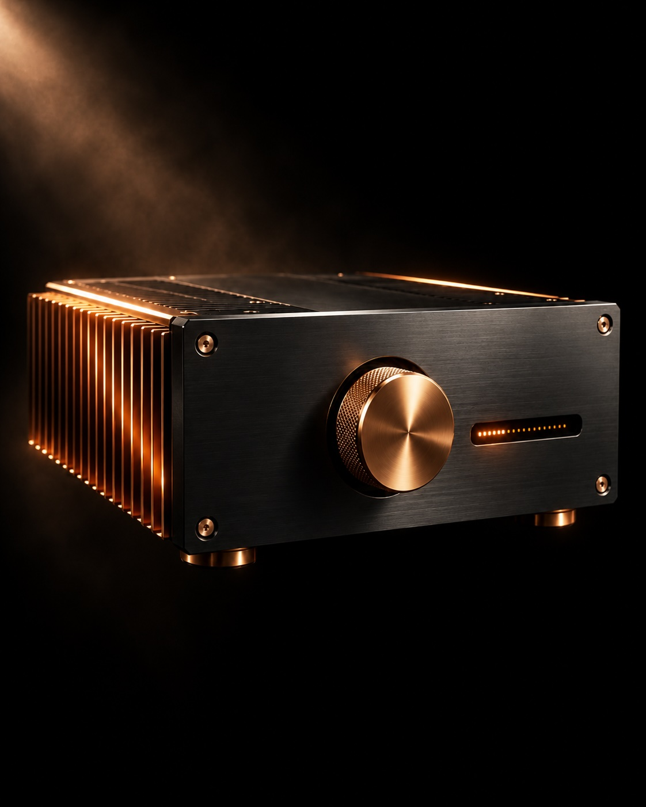
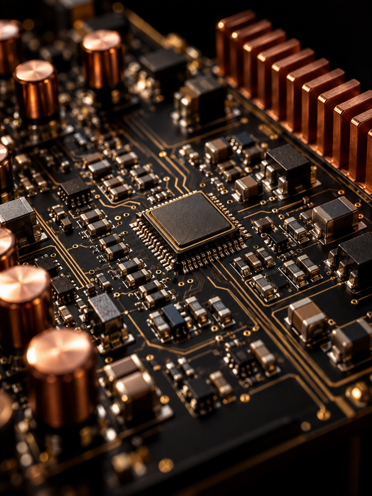
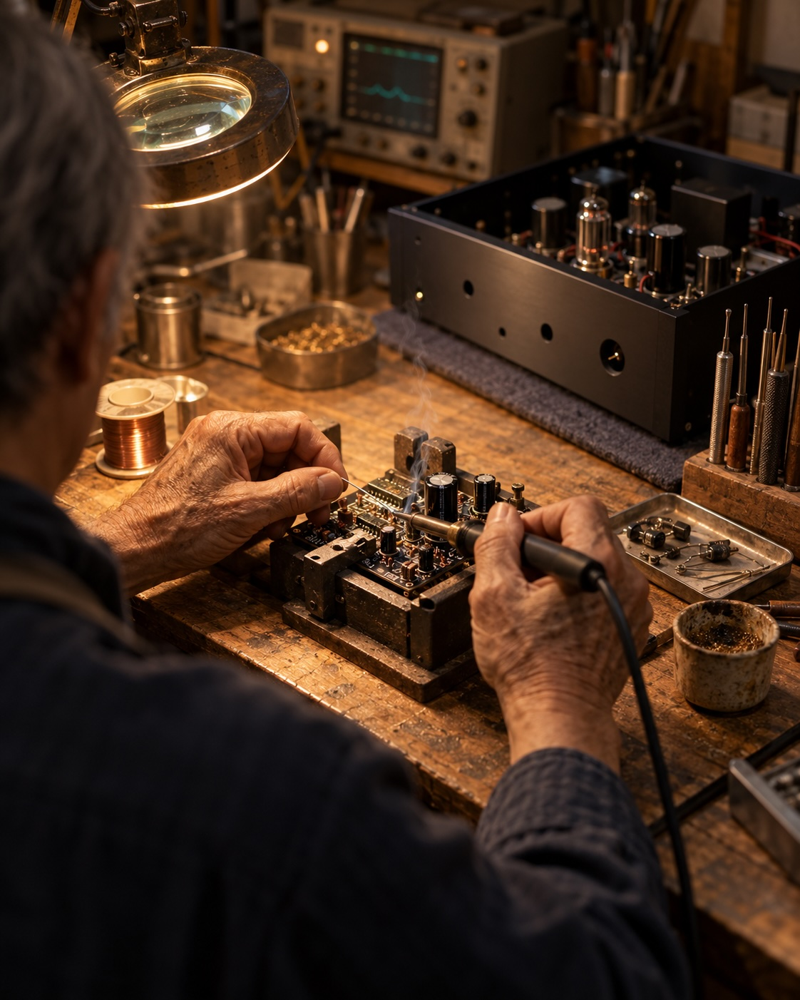

抵抗比で増幅
二本の抵抗が増幅を決める。全段帰還で補正する必要がないため、立ち上がりを鈍らせるループ遅延もない。
熊本、日本 · 1974年創業
録音から部屋までの最短経路。全段帰還ゼロ。入力減衰ゼロ。信号遅延は1000万分の1秒。熊本で五十年、一台ずつ。

ほとんどのアンプは、誤差を抱えて生まれ、回路の残りすべてを使ってそれを補正する。負帰還は出力と入力を比べ、その差を入力へ戻す。数字の上では歪みが下がる。だが時間は曲がる。補正は、音のあとに届く。
SATRIは別の場所から始める。利得は二本の抵抗の比で決まる。出力素子には最初から正確であることが求められ、あとから詫びる必要はない。信号は前へ進み、時間は乱れない。
音の立ち上がり、弓が触れる前の息、最後の和音のあとの部屋。すべてが、あるべき時刻に届く。
二本の抵抗が増幅を決める。全段帰還で補正する必要がないため、立ち上がりを鈍らせるループ遅延もない。
SATRI-LINKは信号を電流としてBNCで伝送する。プリアンプとパワーアンプは電圧変換を挟まず、直接つながる。
SATRI回路の遅延は約1000万分の1秒。CAP-1001Mは600kHzに達し、100kHzまでフラットだ。
第二世代のHBK(I)は、電圧でも電流でも入力できる。バッファ段を介さず、ソースが言語を選ぶ。

最短経路は、検証も最も簡単だ。以下はCAP-1001Mの公表値。13Wのモノブロック、出力インピーダンス0.6Ω、全段帰還なし。
CAP-1001Mの公表仕様。歪率は20Hz、8Ω、1W時。全段帰還がないため、ダンピングファクターは出力レベルに対してほぼ一定。
SATRI技術資料を読む意図的に小さなラインナップ。モデルを増やすほど、どこかに妥協が生まれるからだ。必要な出力、方式、入力を選ぶ。すべてのモデルに、存在理由がある。

デジタル制御パワーアンプ
SATRI世代の完成形を一つの筐体に。利得とバイアスはデジタル制御、回路は表面実装の世代へ。最初から正確であることへの姿勢は、変わらない。
価格は消費税込。海外発送の送料および輸入関税は別途計算されます。 SATRI Shopの全ラインナップを見る ↗

バクーンプロダクツは1974年、熊本で生まれた。五十年後のいまも、意図して小さい。一つの作業台、小さなチーム、そして設計者が、アンプが組み立てられ、測定され、聴かれる同じ部屋で仕事をしている。
小さいままでいるのは、最後の五パーセントを聴き分ける唯一の方法だからだ。小ささは、守るべきもの。工場は平均的な一台に最適化する。工房は、この一台と前の一台の違いを聴き分けられる。
つくるものの大半は、日本を出ていく。最初の一年に不具合が出れば、その一台は、組み立てたのと同じ作業台へ戻る。
SATRI回路は三十七年間、改訂され、測定され、作り直されてきた。世代ごとに、何かが削られた。コンデンサ、変換、補正。最新のHBK(I)は第二世代として、いま生産されている。これが、その記録だ。
熊本でオーディオ製作を開始。
最初のSATRIアンプ、MORPHEUS。二本の抵抗で利得を決め、全段帰還を持たない。
BPM-7110TハイブリッドIC。AMP-5520シリーズでSuper-SATRI出力段が続く。
超高精度カレントミラーで歪みを十分の一に。SATRI-IC-SPが量産へ。
ベース電流の誤差を補正。SATRI-IC-EXと、より高精度なULが続く。
回路が国際舞台で認められる。
全面表面実装のアンプ。それを中心に新世代の回路が生まれる。
熊本地震のあとに生まれた限定モデル。
CAP-1001とCAP-1004が、MJ無線と実験のテクノロジー・オブ・ザ・イヤーに入賞。
CAP-1001Mに最新の入力方式。CAP-1005 DACにはSATRI V12。
アンプは、脇へ。SCL · 1974
音楽が、届く。
ラインナップは、意図的に小さい。部屋と音楽についてお聞かせください。どのアンプが合うか、こちらからご提案します。ご連絡いただくか、熊本の工房へお越しください。
熊本、日本
予約制
SATRI Shop お問い合わせ ↗
熊本から発送
韓国・オーストラリアに代理店